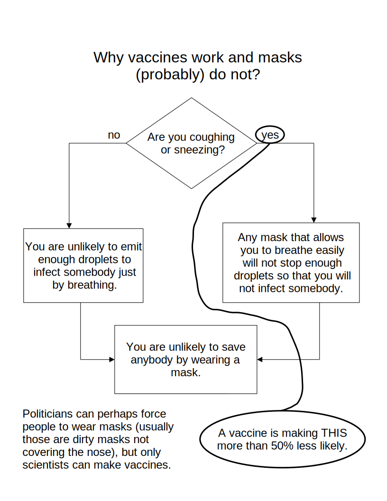
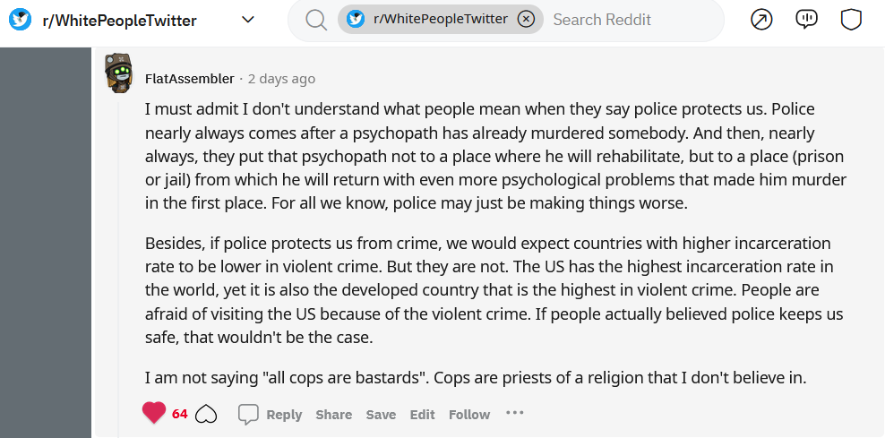
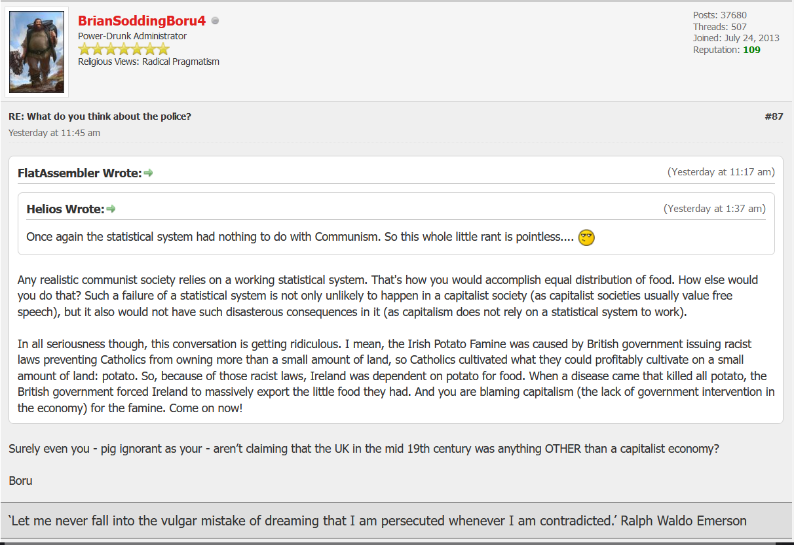
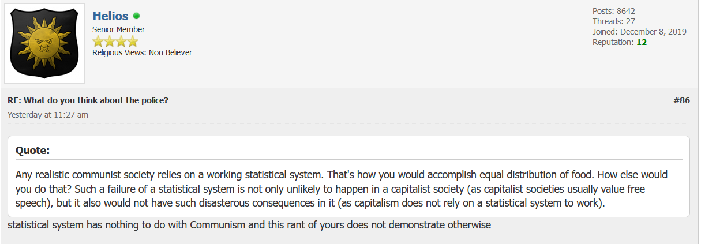

About Libertarianism
UPDATE on 02/12/2024: I have written a blog-post about how people are often ignoring engineering challenges when discussing politics.
UPDATE on 12/06/2024: I have made a YouTube video about how to convincingly argue against anarchism. In case you cannot open it, you have this MP4 file as well as the transcript. I feel like this is a very important video, since most of the people cannot justify their political beliefs.
UPDATE on 29/05/2024: I have made a YouTube video about superbacteria. In case you cannot open it, try downloading this MKV video and opening it in some media player.
UPDATE on 23/01/2024: I've made a video called "Why I am no longer an anarchist." (MP4, DOC script). In short, I realized that government regulation are the only realistic solution to some real-world problems, such as superbacteria caused by the agriculture.
UPDATE on 13/09/2021: You may be interested in reading my essay about political blindness. It is much more well-written than this blog-post is.
UPDATE on 29/07/2022: I have made a YouTube video about libertarianism (if you cannot open it, try downloading this MP4 and opening it in VLC or something like that) that summarizes many of my political views.
TL;DR: If we should have a government at all, it should be one based on science. And modern-day social sciences, and (perhaps especially so) fields of science that combine natural and social sciences, are not yet scientific enough to allow us to base governments on them. Modern-day social sciences usually just give governments false confidence that their policies are correct and, to quote Clive Staples Lewis, forbid wholesome doubt. Therefore, we should not have a government. If we were perfect, then we should be living in a technocratic dictatorship. But, clearly, we are so far from perfect that anarchy is better. I became a libertarian because government-backed-up pseudosciences put my mother and almost my father in jail. (UPDATE: You know what, now I agree with Ayn Rand that this "freedom is good because we are not perfect" is medieval thinking in post-industrial age and is getting things precisely backwards. We need laws (and probably the government) because of the things such as the fact that we will not have lab-grown eggs any time soon, so lab-grown animal products will not address the problem of superbacteria any time soon. We need laws to make the Internet work because the protocols used on the Internet are not (and probably cannot be) perfect, and there seems to be no technical solution to the problem of Internet service providers setting up open DNS servers so that they can be used for DNS reflection attacks. In other words, we need laws and somebody to enforce them because we are not perfect. If we were perfect, then we should be living in an anarchy.)
The word "libertarianism" is defined as "a belief in human free will". Now, the phrase "belief in" has two quite distinct meanings: one is the belief that something exists, and the other one is the belief that something is reliable.
Green Polar Rose-
One of the symbols of
libertarianism.
Libertarianism has a bad name. Its adherents are often said to be selfish and greedy. But the same is true for many other political opinions that aren't popular. That's because its arguments aren't communicated in a good way (they're often accompanied by things such as global warming denial, or nonsense and insulting phrases such as all cops are bastards), or worse, they aren't being communicated at all.
WARNING: The following text contains
things that some people (especially in Croatia) might find insulting.
It was not intended that way, but I can see how it could. It's nothing
racist, nor against LGBT individuals, nor against feminism, nor does
it support communism, or anything like that. I suppose it can also be
depressing to some people, but it is better to be a realist than an
optimist. If you are ready to read it,
click here.
It's difficult to convince people to value freedom. It's much easier to convince them that giving up liberty somehow makes a society better. It's instinctual to think that taking away peoples' freedom and controlling what they do somehow makes them more economically efficient. And maybe if human beings were perfectly rational and had access to perfect information (so that game theory could be used to model human behavior), these instincts would be correct. Those instincts are why we had the things such as slavery, fascism and communism. And violent revolutions are, exactly because of that, counter-productive. If the vast majority of people believe government is necessary for safety, overthrowing a government usually leads to an even more oppressive government forming. Even when you do convince people to value freedom, there is often a state holding them back. For instance, the government was one who was putting the liberators of the slaves into prisons. (UPDATE on 25/08/2025: Now I think there is an even more fundamental reason why libertarianism is difficult to achieve. Namely, the fact that an average person seems to have almost-inverted bullshit detectors when it comes to determining which laws are good and which are not. Yes, we are all bound by tens if not hundreds of thousands of pages of law, and, yes, the vast majority of them are unnecessary if not downright harmful, but an average person is not capable of telling which laws are necessary. An average person, including presumably most politicians, believes in the Hobbesian nonsense of "bellum omnium contra omnes", so it seems to them that the laws against murder are necessary. To me it seems obvious they are harmful, but hardly anybody sees that. And an average person does not understand superbacteria enough to understand why laws against the abuse of antibiotics in the egg industry are necessary, and will be necessary even long after we have lab-grown meat. And an average person does not understand how the Internet works well enough to understand why laws against open DNS servers are necessary. It's not at all obvious how to solve that problem.)
Democracy is arguably better than theocracy, in fact, as I explained in my blog-post about atheism, I believe theocracy is the worst form of government, because it is most immune to logic and evidence showing its policies are bad. But that does not mean that, if you try to install a democracy in a theocracy such as Afghanistan, you will succeed. In fact, attempting to install democracy in a country where people are indoctrinated into thinking theocracy is good and that education is bad (no idea how they make that compatible with Islam in their heads), is arguably counter-productive. I think all countries are like Afghanistan in that regard, having indoctrinated population not willing to fight for good principles, in fact, they are indoctrinated to fight against them. Almost everybody these days, and the same is true in history, is indoctrinated into thinking government overreach is not an issue, or at least not as big of an issue as it actually is.
In a world in which people were rational, or at least a significant percentage of people was rational (so that they would make a good government), eugenics and government telling people what to eat would certainly be good things. Government overreach would not be a concern. In the imperfect world where we live, we need to make trade-offs between the useful things government does and avoiding government overreach, and the trade-off that avoids government overreach is, as far as I can tell, always better. In a rational world, it would be a good thing to get rid of genetic diseases by preventing people with them from procreating. In real world, we need to ask ourselves how big the intended effects would be, would government even do those things properly, and whether it is worth the government overreach. Given that only around 3% of deaths are caused by a known genetic anomaly, eugenics would be a giant government overreach with, at best, minimal health benefits. Also, real-world governments that tried to do eugenics arguably did not do it properly: killing entire ethnicities with no evidence of genetic disease (as Nazis were doing) will, if anything, make our gene pool less fit, rather than more. Nutritional scientists mostly agree that around 17% of fatal heart disease these days is caused by saturated fat. The associations between sugar and type-2-diabetes and between heme iron and colon cancer are significantly weaker. So, given that around 11% of deaths are due to heart disease, government forcing people what to eat will, at best, reduce the number of deaths per year by around 2%. Would that be worth the government overreach? I do not think so. Especially not since real-world governments do not seem to give proper nutritional advice, so the actual decrease in mortality will be way less than around 2%, if there would be any at all (It is hard to tell how many deaths are indeed caused by inadequate nutrition. There is this perception that Vitamin K deficiency, agruably the biggest cause of heart disease historically, is gone, although the evidence tells us otherwise. There is also this perception that scurvy is gone, when, in fact, around 12% of people these days suffer from Vitamin C deficiency, the vast majority of that being undiagnozed or wrongly diagnozed as something else. I have asked a Quora question about it. Nevertheless, I do not consider that relevant, as the government cannot address the problems it refuses to acknowledge even exist, that are widespread Vitamin K and Vitamin C deficiencies.). Some people think a significant percentage of COVID-19 patients would have been saved by government forcing people to follow a good diet, but, in my opinion, even that is questionable. Suppose everybody in some country has type-2-diabetes, that makes COVID-19 deadly. In that country, who would be those people spreading COVID without realizing they are infected? Almost nobody, right? Which is presumably why COVID-19 did not spread as much in countries most plagued by type-2-diabetes, that are Sudan and Papua New Guinea. Slightly decreasing type-2-diabetes in Sudan or Papua New Guinea would obviously lead to more COVID-19 deaths, rather than less. Relationship between rates of type-2-diabetes and COVID-19 deaths is obviously a Laffer Curve it is hard to tell where the peak is and whether we are on the left of that peak or on the right of that peak. And let's not forget there are some rare germs, such as the Bird Flu, which kill people by turning their immune system against them, and good diet in a Bird Flu pandemic may even be counter-productive. And the same probably goes for your ideas about what the government should do: it would have, at best, minimal benefits, while resulting in a lot of dangerous increase in government power.
Achieving libertarianism would require a giant paradigm shift in the way most people think about politics. People usually consider sovereignity of countries to be a good thing. Libertarians do not, we hate the idea that some fallible government should have absolute power. People usually consider equality before the law to be a good thing, except, in recent times, for vaccination companies. People have started to realize holding vaccination companies liable for incredibly rare (if real) severe side-effects of vaccination discourages investment in this essential business and does more harm than good. Hopefully people will soon realize the same is true not just for vaccination (Elon Musk, for example, seems to realize that, when he said that the only way to innovate in today's society is to ignore the laws and hope nothing happens to you because of that). Most people consider rule of law to be a good thing. But rule of law only makes sense if laws are good, and libertarians think the vast majority of laws we have are bad, and that it is a good thing they are not always enforced. Most people think corruption is always bad, that it is never a good thing if the government breaks its own laws. Libertarians think corruption is a symptom of a bigger problem of stupid senseless laws, and that eliminating the corruption while doing nothing about the underlying problem often does more harm than good.
People tend to think it is important who is on power, and that, if they were on power, things would probably be better. For example, people tend to describe Dalai Lama and Mao as mass murderers. In reality, if you were in their shoes, you would probably have done the same, afraid for your life and realizing how powerless you actually are. Imagine that you are Dalai Lama receiving a letter saying "We are about to do some ritual, and, for that ritual, we need this-many cut-off hands and this-many cut-off heads. Order your army to kill or mutilate some Chinese people to deliver that to us... or else we will kill you and replace you with somebody else.". What would you have done? What would you have done if you were in Mao's shoes when he went to investigate reports of mass starvation in Henan, and people there replanted rice from multiple acres into one to make it look like the crops had not have failed? People who appear to be on power are usually powerless to change anything, and are often also unaware of what is really going on (or at least the extent of the problem). During history, rulers have often been intentionally kept ignorant, as in the case of Potemkin Villages. And when they are not, they have little incentive to actually inform themselves. This is true even today and in relatively free countries: in his big speech, the US president Joe Biden said that almost all Americans have been vaccinated against COVID-19 (354 million of them), when, in fact, less than half of them have been, due to logistical problems and vaccine hesitancy. He was arguably less informed about the issue than an average person is, so no wonder he cannot even begin to solve the problem. Clearly, world leaders of today are mostly just as ignorant as Hui Jin when he said "If they have no rice, let them eat meat." or as the anonymous princess in the Jean-Jacques Rousseau's Confessions (often said to be Marie Antoinette, even though that is unlikely) who said "If they have no bread, let them eat cake.", and Mao was a rule rather than an exception when it comes to that. If the country you are governing had been struck by famine for decades, and there comes a biologist called Lysenko claiming to have a solution, and many (though not most of them) biologists agreed with him, there is a very good chance you would implement their policies much like Stalin and Mao did. When their country was plagued by the COVID-19 pandemic, an illness with, at that time, no known cure or prevention, which appeared to mostly be spread by asymptomatic individuals while being very deadly to elderly people and other people with low immunity, and there was a group of scientists claiming that lockdowns and mask mandates could curb the pandemic, the vast majority of governments implemented policies similar to those that those scientists were suggesting. Obviously, those policies did not turn out to be nearly as harmful as Lysenkoism turned out to be (though, you cannot deny those warnings early in the pandemic, that suicide spikes caused by lockdowns might outweight any possible protection against COVID-19 that lockdowns could provide, were reasonable, after all, it seems now that they turned out to be true at least for teenagers), but they are similarly poorly-designed experiments (we still do not know beyond reasonable doubt whether they work) everybody was forced to participate in. Really makes you wonder how are most people today, including most politicians, really different from Stalin and Mao, does not it? Are modern politicians simply in different situations, rather than being significantly more competent and well-intentioned? Clearly, if their country is in some situation which seems hopeless, and there comes a group of scientists claiming without good evidence to have a solution, modern politicians are willing to force everybody to participate in a poorly-designed experiment to test whether that solution works. Yet, people seem to be obsessed with who is in power, as if that was likely to make a difference. The Croatian ex-prime-minister Ivo Sanader has been serving a sentence in Remetinec jail since 2012 for the abuse of power, and most people (at least those who have not been enough brainwashed by the right-wing propaganda to think the things he was convicted of did not actaully happen; I have asked a Quora question about that) think that happened only because we chose the wrong party at the election and that him ending up in jail is justice. In reality, justice would be if the society is structured so that such things cannot happen, and somebody else would have probably done the same if they were in their shoes. Restricting the government so it can do no harm is way more important than enabling it to do something good by forcing people to do things against their will. Such a paradigm shift in thinking, that people stop worrying about who is on power, and start worrying about what incentives people on power actually have, is hard to accomplish.
Even when people indeed are thinking about incentives, which is closer to the right way to think about political philosophy, they are often replacing real-world governments with something imaginary. They are often doing the same mistake as Thomas Hobbes did when he said an absolute ruler has an incentive to rule wisely because he can get more tax money if the society he is ruling is prosperous. That is extremely detached from reality: absolute rulers have an incentive not to rule wisely (poor peasants not making good revolutionaries, absolute rulers often being threatened by other people in the government that they will kill them if they does not kill their political opponents...) and often do not even have the ability to rule wisely (they are being actively misled about what is going on in the country by Potemkins in the government, and, more generally, social sciences are not yet advanced enough to tell rulers how to rule wisely).
What happened to me so that I became a libertarian? Well, I realized that the government-backed-up pseudosciences destroyed my childhood and teenage years. After my parents got bitterly divorced, somebody from the social security (and I am quite sure I know exactly who, but I won't name them here) made up a story that my father was a rapist and that I was a witness. Since they were in the government, many people believed them back then, including my mother. Both my parents lost their jobs and gave all the money I was supposed to start my life with to lawyers. That story was well-known, and nobody wanted to be a friend with me. I was lonely (thankfully, I am an only child, so I didn't have to share this little money my parents were able to spend on me with my siblings), and I became a part of a group of vandals and alcoholics. Additionally, my mother ended up in jail for a year (you can see excerpts from a letter I wrote to her back then). Government might steal money from my fellow citizens and give it to me in compensation, but it cannot give me my childhood and teenage years back. Even today, I sometimes get asked whether there is some truth to that story about my father. Uncomfortable, I answer that there isn't, but that that story, because the government got involved, had very real and devastating consequences. I am no longer an alcoholic and a vandal, and I am relatively respected among the people who know me. But to prevent other people from getting into such situations, I want to send a message: "Don't ascribe superpowers to the people in your government." That means don't believe ridiculous conspiracy theories, but also don't believe that the government can do miracles to protect us.
UPDATE on 14/07/2019: I've made a thread about libertarianism on a Latin forum, to see what people educated in history and social sciences think about it. You can see it here. In case that website ever goes down, here is that short essay in Latin I posted there:
Securitas, quae nobis data a militia est, falsa est. In saeculis historiae, etsi custodes et equites omnes spectabant et custodiebant, non poteras, viis in urbibus iens, securus a latronibus esse.
Et de rebus oeconomicis... Linguae videntur esse sine imperiis posse. Si linguae sine imperiis possunt esse, cur oeconomia non possit?
Et de rebus bellorum... Paene omnia bella horum temporum pugnae sunt, ut omnia bella cessent. Sed bella numquam bella inhibere succedent. Et tela solummodo raris temporibus veniunt ubi debentur, arma bonorum hominum saepe veniunt in malas manus.
Civitates amant falsam securitatem, quod leges et imperia dant eis. Difficile pugnare contra ei est. Multi homines censent libertatem civitates oeconomice parum strenuas facere, et quod libertas, quodam modo, facit homines res, quae non rationales sunt, facere. Id est cur habebamus Fascismum, Communismum et servos. Sed possumus sperare numerum eorum hominum, qui libertatem non amant, minorem in futuro esse.
UPDATE on 22/09/2019: I've just posted a YouTube video about pseudoscience in American politics. If you can't open it, you can perhaps try to open a low-quality MP4 file hosted on this server (it can be opened on almost any platform using VLC Media Player). Failing to do even that, you can probably download the MP3 audio.
UPDATE on 20/10/2019: I've just posted a YouTube video about libertarian philosophy in Latin. If you can't open it, try this and, if that also fails, download just the audio here. I've also opened a Reddit thread to discuss that video.
UPDATE on 08/02/2020: I've posted a YouTube video explaining why I think that, if you support free trade and free movement, you can't also support immigration restriction. If you can't open it, try to download the MP4 file.
UPDATE on 23/02/2020: I've translated the lyrics a song called E Moj Plavi (MP4) into English, which seems to express some libertarian ideas. ( UPDATE: I received a message from somebody claiming to be Đorđe Balašević about how my translation is offensive and asking me to delete all copies of it as soon as possible, or else he is going to make a lawsuit against me. While I find it just as believable it wasn't real Đorđe Balašević, but somebody who tries to shut him up, the risk of getting into such lawsuits is rather high. If it is him, it is sad that a singer who writes and sings anti-police songs will sue somebody for offensive speech, because it shows he does not actually believe what he preaches. )
UPDATE on 03/10/2020: I've translated a song against nuclear weapons into Croatian. You can see it on YouTube here. If you have trouble opening it, try downloading this MP4 and opening it in VLC media player (or something like that).
UPDATE on 24/07/2021: I have made a diagram explaining why vaccines work, and mask mandates probably do not:

Here is a quick explanation as to why gun control probably does not work:
What people think the law says: Let's ban guns which tend to be used in mass shootings to make it harder for criminals to acquire them.
What the law is actually saying: Let's ban assault weapons (automated guns that may actually come useful in self-defense situation when every second counts), while leaving the guns that are actually used in mass shootings legal. And let's make it illegal for mentally ill people to have any guns (never mind mentally ill people are also more likely to be the victims). Who cares about the constitution and privacy of medical information?
Mass shooters: *They tend to get weapons they are using illegally anyway.*
Meanwhile, the actual problem of mental illness because of which people engage in such crimes remains unaddressed.
| How can a government end a pandemic? | |
|---|---|
| Lie to people | Tell people the truth |
|
The government of Neatherlands: As soon as you get
vaccinated with the J&J vaccine, you can safely be "dancing with Janssen". Young people: *Do what they are being told.* *COVID-19 cases spike, and will presumably be followed by a (relatively small compared to 2020 at the same time) spike in deaths.* Anti-vaxxers: See? We have told you that vaccines do not work! Neatherlands has a high vaccination rate, yet cases are spiking there. Government is lying about how effective the vaccine is, so how can we trust them they are even safe? *Many people refuse to get vaccinated.* |
Croatian government: Do not go dancing immediately after
you get vaccinated. And do not drink alcohol soon after getting
the vaccine, it can make the side-effects of vaccination worse.
Vaccines only start working after 2 weeks, and in some people
only after 4 weeks. And even then, it is hardly responsible to
go dancing as long as the virus is circulating around. Getting
vaccinated decreases your chance of spreading COVID-19 if you
catch it only by around 45%, and there are still many
uvaccinated vulnerable people around. Furthermore, vaccines do
not exactly reduce the chance of vaccinated 75-year-olds dying
from COVID-19 down to zero, they are about as immune as
unvaccinated 50-year-olds are. Young people: (wrongly thinking) Ah, who cares then? Who cares that there is this pandemic in the first place? I am very unlikely to get seriously ill from it. And who cares that the economy is suffering? At least the air is cleaner. *Vaccination rates remain low.* |
UPDATE on 27/08/2021: I think I have figured out a nice response in case somebody on an Internet forum asks you to stop talking about politics. Say to them "OK, then, let's talk only about idiotic things. You know, Aristotle called all things not related to politics 'idiotic'.". The joke is in that the word "ιδιωτης", which Aristotle did indeed use to mean "things not related to politics", meant "private" or "one's own" in Ancient Greek, it is just that the word has changed its meaning over centuries drastically.
UPDATE on 16/02/2022: Here is an interesting conversation about gun control I got myself into:
before you get one - pass a pyschology test, safety test, licensing, insurance and registration etcetcetc
Youre really flexible.
You must be a gymnist.
there is no answer for such a stupid request.
if you want one i can piece something together
you have right to defend yourself.
you got 2 arms 2 legs.
does the mayor take personal responsibility if you personally get attacked?
not unless crime is so rampant in your neighbourhood.
feel free to sue the mayor.
but for the 100s of people you meet everyday, do they have the right to safety?
can we trust the gov't has done everything reasonable in their power to ensure to know that you, a possibly mentally disturbed person, does not have a gun?
why does a mental person need a gun for the off chance they're attacked?
are you so paranoid that someone's out to get you?
you believe the earth is flat and there's gov't conspiracy against you?
ya... no sorry i'm pretty sure the risk to others outweighs the risk to you.
UPDATE on 28/07/2022: I have made yet another YouTube video about anarchism (MP4).
UPDATE on 01/12/2022: My anarcho-capitalist comment on r/WhitePeopleTwitter received an unexpected number of upvotes:

UPDATE on 08/12/2022: People on AtheistForums insist that Irish Potato Famine is caused by capitalism (and that Great Chinese Famine had nothing to do with communism):

How can anybody think that way is truly beyond me. In my opinion, the Irish Potato Famine may be classified as an intentional genocidal policy, similar to Holodomor.
UPDATE on 08/12/2022: People on AtheistForums insist that Great Chinese Famine had nothing to do with communism:

Once again, how anybody can think that way is beyond me. I am not saying communism inevitably leads to something like Great Chinese Famine. But it's hard to imagine how pseudoscience such as Lysenkoism could have such disasterous consequences in a capitalist society.
UPDATE on 25/12/2022: I have written an essay specifically about the lessons I believe we should have learned from the COVID-19 pandemic.
UPDATE on 19/11/2023: I have opened a thread about gun control in Latin on two Internet forums: r/latin and TextKit. Here is the opening post of both:
Quid homines in hac agora censent de legibus quae prohibunt civibus sclopeta habere? Ego censeo quia, et si utimur logica planae terrae (quod Anglice dicitur "Flat-Earth logic") et si utimur logica sphaerae terrae (quod Anglice dicitur "Round-Earth logic"), debeamus esse contra eas leges.
Si sequimur logicam planae terrae... Ego vivo in Croatia et ego numquam vidi sclopetum. Etiam, sclopeta (etiam bombi) apparent contradicere secundae legi thermodynamicae. Secunda lex thermodynamicae docet nobis quia nullum corpus potest agere laborem (productum fortiae et distantiae, quod metimur in joulibus) ex sua ipsius energia internale. Per secundam legem thermodynamicae, corpus, ut possit laborem facere, debet energiam accipere ab alio altero corpore. Sed sclopeta (et bombi) apparet eo contradicere. Cum premimus scandalam sclopeti, damus ei parvam energiam, sed id sclopetum dat proiectili magnam kineticam energiam. Ut id faciat, sclopetum debeat uti sua energia internale, annon? Ego non sum physicista, ego studebam scientiae computatrali in universitate, sed id est quomodo id apparet mihi. Ergo, ego nescio num sclopeta vere exsistant. Et si imperium attentat regulare aliquid quod nescimus num vere exsistat, id est solummodo potentiam praehendere (quod Anglice dicitur "power-grab"), annon?
Si sequimur logicam sphaerae terrae...
Anno Domini 1995-o, Americanus sociologista cum nomine Gary Kleck
fecit studiam quae aestimat quot vitas sclopeta servant in uno anno.
Is quinque milia tempora diligit fortuitum numerum in telephone et
quaerabat homines num, abhinc unum annum, utabantur sclopetum in
defensa. Is aestimavit quia id fiat in America circa 2'000'000
tempora in uno anno. In 16% eorum casuum, homines censebant se
mortuos fuisse si non habuerunt cum se sclopetum. Ergo, si ii
homines veritatem dicunt, sclopeta servant circa 400'000 vitas in
uno anno in America. Pro comparatione, per statisticas imperii
Americae, sclopeta occidunt circa 50'000 homines in uno anno. Et
plurimi ex eis 50'000 hominibus occiderunt se ipsum. Prohibitio
sclopetorum paene certe non servaret eos qui usi sunt sclopetis ut
se ipsos occidant, quia multae sunt viae se occidendi sine sclopeto.
Ergo, si id Gary Kleck studium verum sit, prohibitio sclopetorum
probabiliter servaret minus quam 50'000 homines in uno anno, sed ea
occidat circa 400'000 homines in uno anno.
Etiam,
Americanus economista cum nomine John Lott fecit studiam anno
Domini 2022-o
quae examinat fabulas in mediis de massivis occidendis in America.
In circa 40% casuum, ea occidenda finiunt cum aliquis cives cum
sclopeto offendit homicidam. Si sclopeta prohibita sunt,
possibiliter id sit plus difficile pro homicida sclopetum
praehendere, sed facere massivum occidendum esset facilius, quia
boni homines non haberent sclopeta ut finiant massivum occidendum.
Id est probabiliter cur paene omnia massiva occidenda fiunt in locis
in quibus hominibus non licet sclopeta cum se ferre (quod Anglice
dicitur "gun-free zones").
Deus fecit aliquos homines firmos et aliquos homines infirmos. Sclopeta possunt nobis dare aequalitatem.
Heri erat tricesimus et secundus anniversarius massacri Vukovaris (massacrum Vukovaris erat in anno Domini 1991-o, et hodie est 2023-us annus Domini), et ego censeo quia forsan massacrum Vukovaris non fiebat si cives haberent sclopeta. Ut BBC News dixit: Croat defenders of Vukovar later claimed that the town could have been saved from capture by Serb forces if the nationalist President Franjo Tudjman had been willing to send reinforcements. Ergo, Croatae non habebant satis sclopeta ut defendant contra Serbos. Annon id est deliquium legum de sclopetis? Quid fuisset si cives haberent sclopeta?
UPDATE on 11/07/2024: I've published a YouTube video about why I am pro-gun. You can see the transcript here. If you cannot open it, try downloading this MP4 file and opening it in VLC or something similar.
on 28/09/2024: One more thing I've noticed about the difference between natural and social sciences is the following. In natural sciences, if you want to claim some experiment is flawed, you usually have to find some flaw in the experimental setup. In social sciences, however, you can usually discredit an experiment by saying "Perhaps a more appropriate mathematical model would suggest the pattern is not actually statistically significant.". To understand what I mean, look at the case of the k-r pattern in the Croatian river names. I say: "Such a pattern cannot be due to chance. We need to explain it somehow differently. I suggest that *karr~kurr was the Illyrian word for 'to flow'...". Proponents of mainstream linguistics say: "You are fallling for the Birthday Paradox.". I then do numerical calculations which show that, under standard assumptions, the Birthday Paradox is not remotely an explanation for that pattern, that it suggests that the probability of such a pattern occurring due to chance is somewhere around 1/10'000. Then the proponents of mainstream linguistics say: "Well, you need to adjust for the collision entropy of the Croatian language.". Then I do some measurements and calculations and come to the conclusion that the p-value of that k-r pattern in the Croatian river names is somewhere around 1/500. Then the proponents of mainstream lingustics say: "Well, you need to measure the collision entropy of different parts of the grammar of the Croatian language, such as phonotactics and the rest of the phonology, syntax, morphology...". Then I actually did that, and I came to the conclusion that the p-value of that k-r pattern is somewhere between 1/300 and 1/17. Then the proponents of mainstream linguistics say: "But what if different types of words (nouns, verbs, adjectives...) in the Croatian language have different collision entropy, and nouns (river names being nouns) have a significantly lower collision entropy than the rest of the words in the Aspell word-list?". And it seems to me we can go like that... perhaps forever, or at least for a very long time (If I had to guess, it would end by me making some incredibly technical calculation suggesting that the k-r pattern is probably statistically significant, but that will be so technical and confusing that nobody will be able to actually understand it.). That's hardly a problem in natural sciences, is it?
UPDATE on 20/12/2024: I've made another YouTube video about why I am pro-gun. In case you cannot open it, try downloading this MP4 file. The transcript is available here.